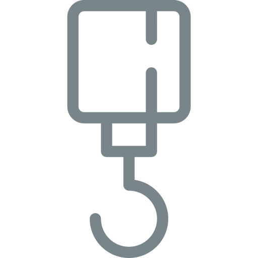
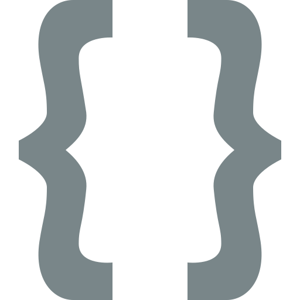

Design Strategy
My approach to web and app development is to create sites and applications that are tailored to a desired user experience. Sites and apps should be fast, look good, and ensure ease of use while strengthening the brand they promote.
-

Ground-up Solutions
Every project is built for optimal functionality, not bloated with unecessary code that can slow your site down.
-

Latest Technologies
Projects utilize dependable and up-to-date tools and techniques to maximize ease of use and achieve a professional appearance.
-
Continued Support
Clients receive continued support regarding revisions and edits to guarantee service satisfaction.
Tools I Use
HTML5
CSS3
Javascript
NodeJS
Adobe Illustrator
Adobe Photoshop
DigitalOcean
Github

Visual Studio Code
WordPress
My Projects

Comprehensive Personality Test